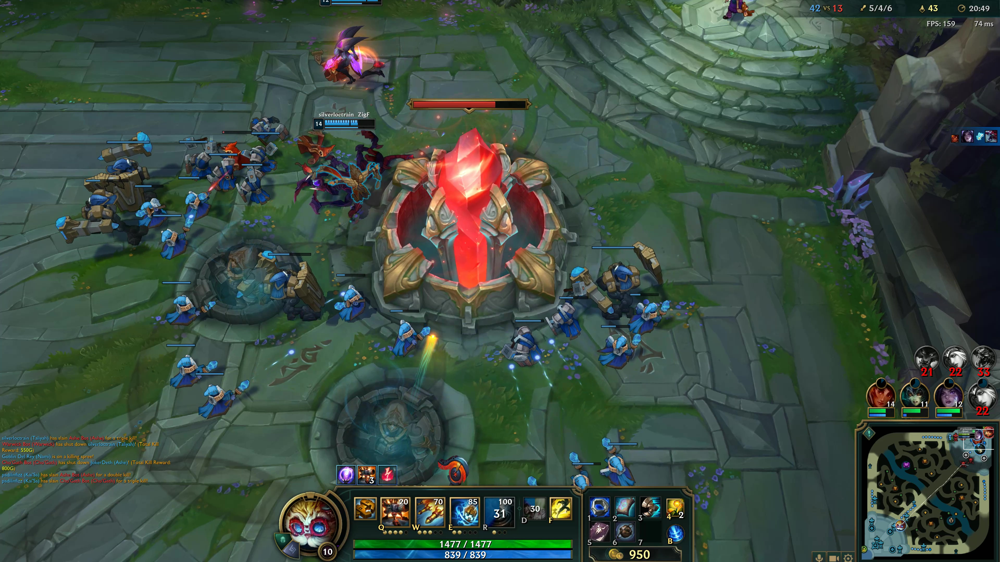
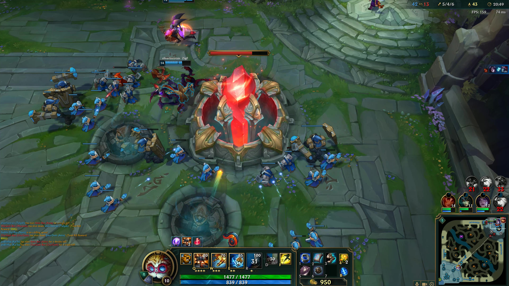

Beginner League of Legends TutorialBeginner League of Legends Tutorial
Beginner League of Legends TutorialBeginner League of Legends TutorialThe main game mode of League of legends is a 5 versus 5 battle. In this portion of the tutorial we will cover map layout, objectives, positional roles, and some simple tactics.
In league of legends there are two maps, summoners rift and howling abyss. The map we will be talking about today is the main gamemodes map, Summoners Rift. Summoners Rift is layed out in a square. In each corner is each teams base and their nexus; we will get to the nexus later. The map is split into 4 main sections. Bottom lane, Middle Lane, Top Lane, The jungle, and the river. Here is a picture of the map! Driving striaght down the center is the middle lane, on the bottom half is the bottome lane, on the top side is the top lane. Running perpendicular to the midlane down the other center line in blue is the river and all of the spots inbetween are the jungle.
The main objective of a game of league is to manipulate the map to your advantage as a team to get to the enemy teams base and destroy their "Nexus". However, there are quite of few things that are going to be in your way before we can run in and take that base! The first main objective that stands in your way are towers. Each lane has 3 towers total before cracking open the enemies base. To take an enemy tower you must manipulate the lane into your advantage. To do this we will attempt to kill or cause the enemy players in your lane to leave. Then once they are not an issue you will manipulate "Minions". Minions are small NPC's that come in waves. We use these to push into the enemy tower because a tower will attack us if we go under it alone and they do too much damage for us to sustaine and it will kill you. Below I have included a picture of what minions and towers look like.
Towers Minions
Once we push and take out two of the three turrets in the lane we can take the third one which is a very important turret known as the "Inhibitor Turret". This turret protects our next important objective on the way to taking the enemies base called the "Inhibitor". The Inhibitor is a small structure which we want to destroy. Once we destroy it our base will now spawn SUPER minions. Super Minions are beefed up versions of regular minions that have stronger attacks and increased armor, making them hard to kill. In addition to super minions, once the inhibitor is killed it gives us access to the Nexus turrets. Below I have inlcuded a picture of the Inhibitor, inhibitor turret, and super minions.
 Inhibitor Inhibitor Turret Super Minions
Inhibitor Inhibitor Turret Super Minions
Once we have cracked through the inhibitors we can finally start to attack the Nexus turrets. There are two turrets protecting the Nexus and we can only attack them if an inhibitor has been taken down. This process can be difficult to complete by yourself and there are some other objectives around the map that we will talk about later that can help us accomplish our goals. Here are pictures of the Nexus turrets and the Nexus.
 Nexus Turrets  Nexus
Nexus Turrets  Nexus